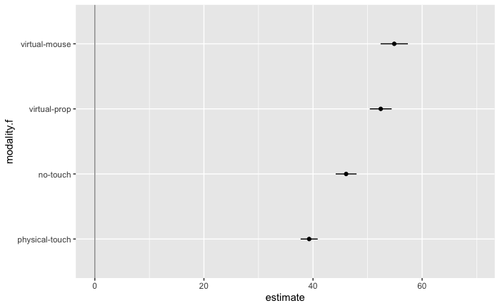
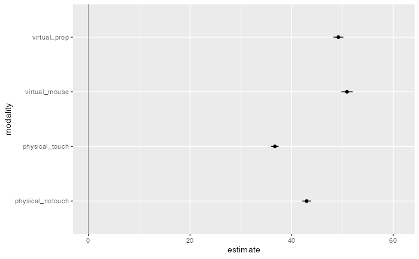

frequentist-multiverse-analysis.RmdError bars are 95% BCa bootstrap CIs.
samplemean <- function(x, d) {return(mean(x[d]))}
M = multiverse()
M$df <- ~ data.userlogs.raw %>%
mutate( duration = branch( data_transform,
"none" ~ duration,
"log" ~ log(duration)
)) %>%
mutate( modality.f = factor(modality) ) %>%
group_by(subject, modality.f, modalityname) %>%
summarise( duration = mean(duration) ) %>%
group_by(modality.f) %>%
summarise( data = list(duration) )
M$n_comparisons <- ~ 3
M$df <- ~ df %>%
mutate( ci = branch( confidence_interval, 0.5, 0.68, 0.8, 0.9, 0.95, 0.99, 0.999 )) %>%
mutate( fit = branch(bootstrap,
"t-dist" ~ map2(data, ci, ~ tidy(t.test(.x, conf.level = .y)) ),
"bca" ~ map2(data, ci, ~ boot(data = .x, statistic = samplemean, R = 5000) %>%
tidy( conf.int = TRUE, conf.method = "bca", conf.level = .y) %>%
rename(estimate = statistic))
)) %>%
select(-data) %>%
unnest( cols = c(fit) )## Warning in norm.inter(t, adj.alpha): extreme order statistics used as
## endpoints
## Warning in norm.inter(t, adj.alpha): extreme order statistics used as
## endpoints
## Warning in norm.inter(t, adj.alpha): extreme order statistics used as
## endpointsp <- multiverse_table(M) %>%
mutate( df = map(.results, "df") ) %>%
unnest(cols = c(df) ) %>%
mutate( modality.f = recode( modality.f,
"1" = "physical-touch",
"2" = "no-touch",
"3" = "virtual-prop",
"4" = "virtual-mouse"
) ) %>%
mutate(
estimate = ifelse(data_transform == "log", exp(estimate), estimate),
conf.low = ifelse(data_transform == "log", exp(conf.low), conf.low),
conf.high = ifelse(data_transform == "log", exp(conf.high), conf.high)
) %>%
arrange(confidence_interval, desc(data_transform), desc(bootstrap)) %>%
ggplot() +
geom_vline( xintercept = 0, colour = '#979797' ) +
geom_point( aes(x = estimate, y = modality.f)) +
geom_errorbarh( aes(xmin = conf.low, xmax = conf.high, y = modality.f), height = 0) +
transition_manual( .universe )
animate(p, nframes = 28, fps = 2)
Differences between mean completion times (arithmetic means) between conditions. Error bars are 95% BCa bootstrap CIs.
M$df.diffs <- ~ data.userlogs.raw %>%
mutate( duration = branch( data_transform,
"none" ~ duration,
"log" ~ log(duration)
)) %>%
arrange(modality) %>%
mutate(index = rep(seq(1:(nrow(.)/4)), 4)) %>%
select(index, modalityname, duration) %>%
spread(modalityname, duration) %>%
mutate(
`physical-touch - physical-notouch` = `physical-touch` - `physical-notouch`,
`physical-notouch - virtual-prop` = `physical-notouch` - `virtual-prop`,
`virtual-prop - virtual-mouse` = `virtual-prop` - `virtual-mouse`
) %>%
select(`physical-touch - physical-notouch`, `physical-notouch - virtual-prop`, `virtual-prop - virtual-mouse`) %>%
gather(levels) %>%
group_by(levels) %>%
nest()
M$df.diffs <- ~ df.diffs %>%
mutate( ci = branch( confidence_interval, 0.5, 0.68, 0.8, 0.9, 0.95, 0.99, 0.999 )) %>%
mutate( diff = branch(bootstrap,
"t-dist" ~ map2(data, ci, ~ tidy(t.test(.x$value, conf.level = .y)) ),
"bca" ~ map2(data, ci, ~ boot(data = .x$value, statistic = samplemean, R = 5000) %>%
tidy( conf.int = TRUE, conf.method = "bca", conf.level = .y) %>%
rename(estimate = statistic))
)) %>%
unnest(diff)## Warning in norm.inter(t, adj.alpha): extreme order statistics used as
## endpoints
## Warning in norm.inter(t, adj.alpha): extreme order statistics used as
## endpoints
## Warning in norm.inter(t, adj.alpha): extreme order statistics used as
## endpoints## # A tibble: 3 x 11
## # Groups: levels [3]
## levels data ci estimate statistic p.value parameter conf.low
## <chr> <list<df> <dbl> <dbl> <dbl> <dbl> <dbl> <dbl>
## 1 physi… [128 × 1] 0.5 -6.72 -3.37 0.00101 127 -8.07
## 2 physi… [128 × 1] 0.5 -6.13 -2.99 0.00334 127 -7.52
## 3 virtu… [128 × 1] 0.5 -2.60 -1.48 0.141 127 -3.78
## # … with 3 more variables: conf.high <dbl>, method <chr>,
## # alternative <chr>multiverse_table(M) %>%
mutate( df = map(.results, "df.diffs") ) %>%
unnest(cols = c(df) ) %>%
arrange(confidence_interval, desc(data_transform), desc(bootstrap)) %>%
head()## # A tibble: 6 x 20
## .universe data_transform confidence_inte… bootstrap .parameter_assi…
## <int> <chr> <chr> <chr> <list>
## 1 1 none 0.5 t-dist <named list [3]>
## 2 1 none 0.5 t-dist <named list [3]>
## 3 1 none 0.5 t-dist <named list [3]>
## 4 15 none 0.5 bca <named list [3]>
## 5 15 none 0.5 bca <named list [3]>
## 6 15 none 0.5 bca <named list [3]>
## # … with 15 more variables: .code <list>, .results <list>, levels <chr>,
## # data <list<df[,1]>>, ci <dbl>, estimate <dbl>, statistic <dbl>,
## # p.value <dbl>, parameter <dbl>, conf.low <dbl>, conf.high <dbl>,
## # method <chr>, alternative <chr>, bias <dbl>, std.error <dbl>p <- multiverse_table(M) %>%
mutate( df = map(.results, "df.diffs") ) %>%
unnest(cols = c(df) ) %>%
arrange(confidence_interval, desc(data_transform), desc(bootstrap))%>%
ggplot() +
geom_vline( xintercept = 0, colour = '#979797' ) +
geom_point( aes(x = estimate, y = levels)) +
geom_errorbarh( aes(xmin = conf.low, xmax = conf.high, y = levels), height = 0) +
transition_manual( .universe )
animate(p, nframes = 28, fps = 4)